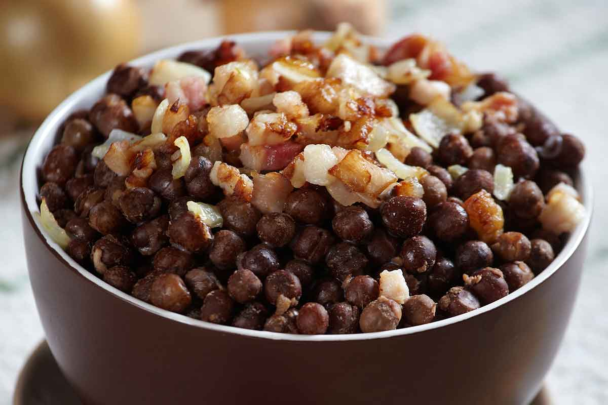

Home

Latvian Grey Peas with Bacon
This hearty dish is a staple of Latvian cuisine, traditionally enjoyed during festive occasions like Christmas.
Grey peas, high in protein and rich in flavor, symbolize prosperity in Latvian culture. Combined with crispy
bacon and caramelized onions, the dish offers a satisfying blend of earthy and smoky flavors.
Simple yet flavorful, this recipe is a comforting reflection of Latvian rural traditions. Often served warm,
it's a filling side dish or snack, ideal for cold winters. The peas' natural richness is perfectly complemented
by the saltiness of bacon, making it a beloved classic among locals.
Ingredients
- 500 g dried grey peas
- 200 g smoked bacon
- 1 medium onion
- Salt
Instructions
- Soak Peas: Rinse the peas and soak them in cold water for 6-8 hours or overnight.
- Cook Peas: Drain the soaked peas and boil them in fresh water with a pinch of salt until
tender (about 1-1.5 hours). Drain and set aside.
- Prepare Bacon and Onion: Dice the bacon and chop the onion. In a skillet, fry the bacon
until it releases fat, then add the onion and sauté until golden.
- Combine: Mix the cooked peas with the bacon and onion. Season with salt if needed.
- Serve: Serve warm as a side dish or a hearty snack.